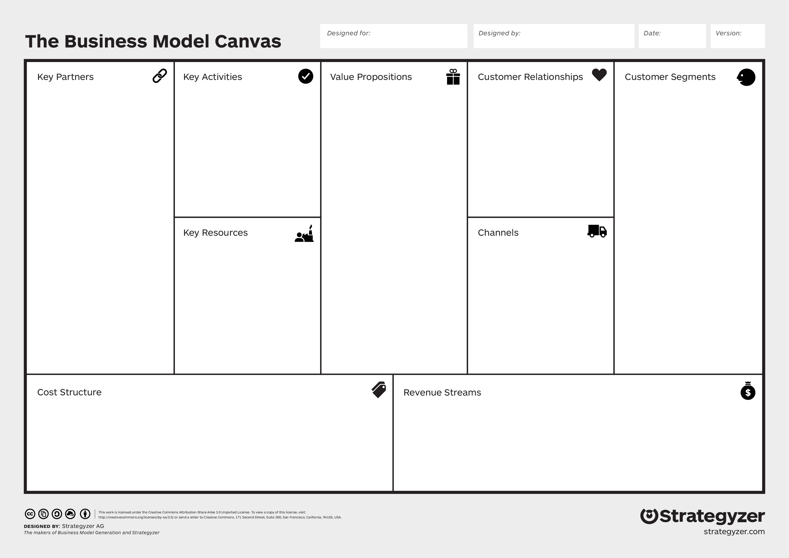

Business Model
- Business
- Gabriel BARBE
Préambule
Pour ce nouveau temps, j'ai décidé de me consacrer à un MON me permettant d'explorer un domaine qui m'attire depuis un certain temps déjà : l'entrepreneuriat. Pour ce cours, je m'appuie majoritairement sur deux sources :
- Un livre "Business Model Nouvelle Génération" par Alexander Osterwalder & Yves Pigneur
- Un MOOC sur OpenClassroom "Construire son business plan"
Le niveau de ce cours est facile, il n'y a besoin d'aucune connaissance préalable.
Business Model
Au delà de l'entrepreneuriat, le Business Model est le fondement de toute entreprise. Nous verrons ici quelles sont les premières questions que les fondateurs de tout groupe ou entreprise se sont posés. Avant l'explosion des Google, Apple etc. il y avait quelques personnes qui ont réfléchi à comment ils pouvaient apporter quelque chose au monde et en retirer de l'argent : c'est ça le Business Model.
Le Business Model est la base sur laquelle repose toute entreprise et sa réalisation doit être réfléchie et prend du temps.
Matrice et définition
Le Business Model et définit par 9 blocs que l'on peut réunir en une matrice :
- Les segments de clientèle
- La proposition de valeur
- Les canaux de commmunication
- La relation client
- Le flux de revenus
- Les ressources clés
- Les activités clés
- Les partenaires clés
- La structure de coûts

Les segments de clientèle
En premier lieu, nous nous devons de savoir à qui nous nous adressons, en d'autres termes : à qui souhaitons-nous vendre.
On peut répartir les segments de clientèle en plusieurs marché :
- Marché de masse : segment général, il ne s'adresse pas à une partie de la population mais à la population en général.
- Marché de niche : segment spécialisé, il s'adresse à une clientèle spécifique souvent experte de son domaine.
- Marché segmenté : segment s'adressant à différente parties de la population, par exemple Doctolib s'adresse d'un côté à la population générale et d'un autre côté aux professionnels du secteur.
Cela résume ce que l'on peut trouver comme segment, on peut en citer d'autre qui rentre dans ces catégories.
Connaitre sa population cible est vitale lorsque l'on développe une entreprise car tout les autres blocs dépendent de ce facteur, aussi bien la communication que la source de revenue etc.
La proposition de valeur
Une fois la clientèle ciblée, il nous faut ensuite savoir comment nous différencier sur un marché. Pour cela, il existe de nombreuse possibilités. La question fondamentale à laquelle il faut répondre est celle du besoin : "A quel besoin répondons-nous ?". A cette question, il existe plusieurs que l'on peut lister de manière non-exhaustive :
- La nouveauté : base de l'entrepreneuriat, un besoin non-comblé par une clientèle cible est bien sûr la réponse la plus évidente à cette question.
- La performance : effectivement, améliorer la performance d'un produit est une manière de créer de la valeur. C'est une possibilité souvent utilisée dans le secteur technologique par exemple.
- Le prix : bien-sûr l'argent, permettre aux clients de faire des économies est surement la manière la plus simple et efficace de créer de la valeur. Les exemples de cette proposition sont légions : Lidl, RyanAir, OuiGo...
- L'accessibilité : permettre aux clients d'accéder à un service qui lui était jusqu'alors compliqué est une bonne manière de créer de la valeur. Blablacar utilise par exemple ce modèle en permettant à la population d'effectuer du co-voiturage avec tout le monde de manière efficace.
- L'ergonomie : la commodité est un critère important lors de l'utilisation d'un service, Doctolib a par exemple révolutionné la manière dont est effectué une réservation médicale uniquement grâce à la simplicité dont est désormais effectuer cette action.
- L'accompagnement : le fait de promettre une garantie d'accompagnement est une manière de créer de la valeur. Darty assure une garantie totale de remplacement des produits à ceux qui souscrivent au "contrat de confiance" par exemple.
Cette liste, loin d'être exhaustive, montre qu'il existe bien des possibilités pour attirer une clientèle. Ces deux premiers blocs sont la base de tous les autres et si ils sont solides, le business model possède alors de bonne base.
Les canaux de communication
La communication est essentielle à bien des fins, on peut en distinguer 5 phases :
- La reconnaissance : comment faire connaitre nos produits ou services à la clientèle.
- L'évaluation : comment les clients peuvent effectuer un retour sur le service ou produit.
- L'achat : comment et où les clients peuvent acheter notre proposition.
- La prestation : comment nous apportons la proposition de valeur aux clients.
- L'après-vente : comment nous apportons un support aux clients après leur achat.
La relation avec le client
Comment maintenir une relation durable avec le client afin que celui-ci continue d'utiliser notre service ?
L'entreprise se doit de répondre à une demande du client même après que celui-ci ait consommé son produit si elle veut fidéliser sa clientèle. De plus, si un client potentiel a une demande elle se doit la aussi d'y répondre afin d'acquérir de nouveaux clients.
Elle peut s'y prendre de plusieurs manières :
- Fournir une assistance personnelle que ce soit par mail, tchat, appel...
- Fournir une assistance personnelle dédié. C'est utilisé lorsque le client veut s'assurer d'un service parfait comme le BTP ou le luxe par exemple.
- Fournir une aide en self-service.
- Fournir une aide automatisé. On observe de plus en plus cela grâce à l'émergence de l'IA, de nombreuses entreprises utilisent des bots en première couche de relation client.
- Créer une communauté d'aide. Cela s'observe beaucoup dan sles entreprises de technologiestels que Dell, Apple etc.
- Co-créer directement la valeur avec le client dans un esprit de partenariat.
Il n'est pas nécessaire de choisir une option dans cette liste, les entreprises utilisent généralement plus de ces possibilités.
Le flux de revenus
Le flux de revenus, c'est le but finale de l'entreprise. Comment gagne-t-on de l'argent. Nous voyons comment créer un business model, comment le valoriser et communiquer dessus cependant comment vivra l'entreprise.
Il existe là encore différents moyens de créer du revenu. Avant de les lister, j'aimerais remettre en esprit que le prix reste un des facteurs déterminants de l'utilisation d'un produit ou service. Il convient donc de se poser les questions suivantes : Combien nos clients sont-ils disposés à payer et comment préfereraient-ils payer. Avec ceci en tête, nous pouvons désormais lister les moyens de générer des flux de revenus :
- La vente de bien : flux de revenus historique, il est à l'origine même de la création de la monnaie et reste sûrement le plus utilisé.
- La location : ce système est à l'origine de nombreux concepts d'entreprise mondialement connnu. La location peut être de longue durée (appartement), de moyenne durée (voiture) ou de courte voire très courte durée (vélo électrique en libre service).
- Droit d'usage : le client paye en fonction du nombre d'utilisation. Ce concept a été très bien utilisé par les applications mobiles où l'on observe souvent une version basique gratuite puis une ou plusieurs versions "premium" permettant l'accès à de nouveaux services ou a un plus grand nombre d'utilisations.
- L'abonnement : système là aussi bien connu de tous, l'abonnement à un service qu'il soit mensuel ou annuel permet de l'utiliser tant que l'on paye pour. Système très prisé des plateformes de streaming par exemple.
- Publicité : l'utilisateur ne paye pas. En revanche, il accepte que l'on lui présente d'autres bien ou service afin de l'influencer.
- Licensing : le client paye pour accéder à la propriété intelectuelle protégée d'une entreprise. C'est un système utilisé par les logiciels par exemple.
- Frais de courtage : l'entreprise touche une commission sur la vente d'un bien ou service. Système utilisé par des plateformes faisant l'intermédiaire entre 2 entités généralement, on peut citer les agences immobilières par exemple.
- Revente de données : système très récent lié à l'exploitation des données à des fins marketing. Le client ne paye pas l'entreprise, en revanche celle-ci revend les données acquise grâce à son modèle pourr les revendre à d'autres entreprise. On a récemment pu voir émerger des applications payant les utilisateurs à marcher, leurs revenus étant liés à la revente des données GPS du client.
Les ressources clés
Les ressources clés peuvent être multiples et dépendent du modèle économique de l'entreprise.
Elles sont divisés en quatre catégories : physique, financière, intellectuelle et humaine.
Les activités clés
Les activités clés dépendent la aussi essentiellement du modèle économique.
Elles peuvent être du domaine de la production, du conseil, du réseau...
Les partenaires clés
Les partenariats sont déterminants pour le développement d'une entreprises.
En effet, de bons partenariat peuvent influencer grandement les coûts de fournitures, de licence etc.
Un bon partenariat peut aussi apporter de la visibilité à un produit, ce qui crée de nouveaux canaux de communication.
La structure de coûts
On peut globalement résumer ce bloc en deux catégories différentes :
- La logique de coûts
- La logique de valeur
Ces catégories correspondent à deux philosophies différentes : Préférons-nous privilégier le coût ou la qualité ?
Le luxe appartient par définition à la seconde catégories tandis que les entreprises dont la proposition de valeur est basée sur le prix appartiennent par défaut au premier groupe.
C'est donc la fin de ce premier chapitre consacré aux différents blocs formant un Business Model. Ces blocs sont tous interdépendants et aucun ne doit être négligés lors de la conception du Business Model.